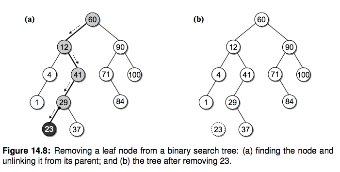

算法与数据结构原理及Python实现
算法与数据结构原理及Python实现之二十：二叉查找树
20. 二叉查找树
二叉树的一种应用就是来实现堆，今天我们再看看用二叉查找树(Binary Search Tree, BST)。前面有章节说到了查找操作，包括线性查找、二分查找、哈希查找等，线性查找效率比较低，二分又要求必须是有序的序列，
为了维持有序插入的代价比较高、哈希查找效率很高但是浪费空间。能不能有一种插入和查找都比较快的数据结构呢？二叉查找树就是这样一种结构，可以高效地插入和查询节点。
BST 定义：
二叉查找树是这样一种二叉树结构，它的每个节点包含一个 key 和它附带的数据，对于每个内部节点 V：
- 所有 key 小于 V 的都被存储在 V 的左子树
- 所有 key 大于 V 的都存储在 V 的右子树

说白了就是对于每个内部节点，左子树的 key 都比它小，右子树都比它大。如果中序遍历(二叉树遍历讲过了)这颗二叉树，你会发现输出的顺序正好是有序的。我们先来定义一下 BST 的节点结构：
class BSTNode(object): def __init__(self, key, value, left=None, right=None): self.key, self.value, self.left, self.right = key, value, left, right
构造一个 BST:
我们还像之前构造二叉树一样，按照上图构造一个 BST 用来演示：
class BSTNode(object): def __init__(self, key, value, left=None, right=None): self.key, self.value, self.left, self.right = key, value, left, right class BST(object): def __init__(self, root=None): self.root = root @classmethod def build_from(cls, node_list): cls.size = 0 key_to_node_dict = {} for node_dict in node_list: key = node_dict['key'] key_to_node_dict[key] = BSTNode(key, value=key) # 这里值暂时用和 key一样的 for node_dict in node_list: key = node_dict['key'] node = key_to_node_dict[key] if node_dict['is_root']: root = node node.left = key_to_node_dict.get(node_dict['left']) node.right = key_to_node_dict.get(node_dict['right']) cls.size += 1 return cls(root) NODE_LIST = [ {'key': 60, 'left': 12, 'right': 90, 'is_root': True}, {'key': 12, 'left': 4, 'right': 41, 'is_root': False}, {'key': 4, 'left': 1, 'right': None, 'is_root': False}, {'key': 1, 'left': None, 'right': None, 'is_root': False}, {'key': 41, 'left': 29, 'right': None, 'is_root': False}, {'key': 29, 'left': 23, 'right': 37, 'is_root': False}, {'key': 23, 'left': None, 'right': None, 'is_root': False}, {'key': 37, 'left': None, 'right': None, 'is_root': False}, {'key': 90, 'left': 71, 'right': 100, 'is_root': False}, {'key': 71, 'left': None, 'right': 84, 'is_root': False}, {'key': 100, 'left': None, 'right': None, 'is_root': False}, {'key': 84, 'left': None, 'right': None, 'is_root': False}, ] bst = BST.build_from(NODE_LIST)
BST 操作：
- 查找
如何查找一个指定的节点呢，根据定义我们知道每个内部节点左子树的 key 都比它小，右子树的 key 都比它大，所以对于带查找的节点 search_key，从根节点开始，如果 search_key 大于当前 key，就去右子树查找，否则去左子树查找。 一直到当前节点是 None 了说明没找到对应 key。

代码如下：
# 找到某个 key 所在的节点并将该节点返回 def _bst_search(self, subtree, key): if subtree is None: return None elif key < subtree.key: # 如果这个值比当前节点的值小，就去左子树去查找 return self._bst_search(subtree.left, key) elif key > subtree.key: # 否则就去右子树去找 return self._bst_search(subtree.right, key) else: # 如果 key = subtree.key，就将这个节点返回 return subtree # 根据提供的 key 得到对应的节点的值 def get(self, key, default=None): node = self._bst_search(self.root, key) # 从 root 节点开始找，找到这个 key 对应的节点 if node is None: # 如果这个节点是 None return default else: return node.value # 如果非空就返回这个值
- 获取最大和最小 key 的节点
其实还按照其定义，最小值就一直向着左子树找，最大值一直向右子树找，递归查找就行。
# 找到值最小的节点 def _bst_min_node(self, subtree): if subtree is None: return None elif subtree.left is None: # 找到左子树的头 return subtree else: return self._bst_min_node(subtree.left) # 找到二叉树中最小值的节点的值（最小值） def bst_min(self): node = self._bst_min_node(self.root) # 从 root 节点开始找找到最小值的节点 return node.value if node else None # 如果 node 非空就返回 node.value，否则就返回 None
- 插入
插入节点的时候我们需要一直保持 BST 的性质，每次插入一个节点，我们都通过递归比较把它放到正确的位置。你会发现新节点总是被作为叶子结点插入。

# 找到合适的位置将该值（节点）插入（新建该节点），并将最开始的额根结点返回（注意返回的是根结点，而不是新建（插入）的这个节点） def _bst_insert(self, subtree, key, value): """ 插入并且返回根结点 :param subtree: :param key: :param value: """ if subtree is None: # 直到递归到的位置的节点为空，也就是还没有这个节点 subtree = BSTNode(key, value) # 就直接新建一个节点 elif key < subtree.key: # 如果要插入的值比要插入节点的值小，就往左边走；递归向下找，直到找到最左边的根结点；每次插入都是插入到根结点的 subtree.left = self._bst_insert(subtree.left, key, value) elif key > subtree.key: # 往右边走 subtree.right = self._bst_insert(subtree.right, key, value) return subtree # 返回最开始的根结点 def add(self, key, value): node = self._bst_search(self.root, key) # 得到该 key 所对应的节点 if node is not None: # 如果这个节点非空，就说明已经存在 node.value = value # 对该 key 对应的节点的值进行更新 return False else: # 否则就新建 self.root = self._bst_insert(self.root, key, value) # 插入完成之后对该树的 root 节点进行更新 self.size += 1 return True
- 删除节点
关于二叉搜索树删除节点的内容可以参考 [reference]-[二叉排序树的删除.flv]；讲的很不错。
删除操作相比上边的操作要麻烦很多，首先需要定位一个节点，删除节点后，我们需要始终保持 BST 的性质。
删除一个节点涉及到三种情况：
- 节点是叶节点
- 节点有一个孩子
- 节点有两个孩子
我们分别来看看三种情况下如何删除一个节点：
删除叶节点：
这是最简单的一种情况，只需要把它的父亲指向它的指针设置为 None 就好。

删除只有一个孩子的节点：
删除有一个孩子的节点时，我们拿掉需要删除的节点，之后把它的父亲指向它的孩子就行，因为根据 BST 左子树都小于节点，右子树都大于节点的特性，删除它之后这个条件依旧满足。

删除有两个孩子的内部节点：
假如我们想删除 12 这个节点改怎么做呢？你的第一反应可能是按照下图的方式：

但是这种方式可能会影响树的高度，降低查找的效率。这里我们用另一种非常巧妙的方式。还记得上边提到的吗，如果你中序遍历 BST 并且输出每个节点的 key，你会发现就是一个有序的数组。[1 4 12 23 29 37 41 60 71 84 90 100]。这里我们定义两个概念，逻辑前任(predecessor)和后继(successor)，请看下图:

12 在中序遍历中的逻辑前任和后继分别是 4 和 23 节点。于是我们还有一种方法来删除 12 这个节点：
- 找到待删除节点 N(12) 的后继节点 S(23)
- 复制节点 S 到节点 N
- 从 N 的右子树中删除节点 S，并更新其删除后继节点后的右子树（其实应该是删除节点 S，删除的方法和前面的删除方法类似，就是根据这个节点孩子的情况来选择对应的方法。）
有个问题是如何找到后继节点呢？待删除节点的右子树的最小的节点不就是后继嘛，上边我们已经实现了找到最小 key 的方法了。

删除节点的代码实现如下：
def _bst_remove(self, subtree, key): """删除节点并返回根节点""" if subtree is None: return None elif key < subtree.key: # 从左边往下找 subtree.left = self._bst_remove(subtree.left, key) return subtree elif key > subtree.key: # 从右边往下找 subtree.right = self._bst_remove(subtree.right, key) return subtree else: # 找到了需要删除的节点 if subtree.left is None and subtree.right is None: # 如果是叶节点，返回 None 把其父亲指向它的指针置为 None return None elif subtree.left is None or subtree.right is None: # 如果只有一个孩子 if subtree.left is not None: # 如果左孩子为非 None return subtree.left # 返回它的孩子并让它的父亲指过去 else: # 否则就返回右孩子 return subtree.right else: # 如果是有俩孩子，寻找后继节点替换，并删除其右子树的后继节点，同时更新其右子树 successor_node = self._bst_min_node(subtree.right) # 找到后继节点 subtree.key, subtree.value = successor_node.key, successor_node.value # 将该节点与后继节点的 key 和 value 进行互换 subtree.right = self._bst_remove(subtree.right, successor_node.key) # 对右子树继续递归调用该函数进行更新 return subtree def remove(self, key): assert key in self self.size -= 1 return self._bst_remove(self.root, key)
二叉查找树完整代码实现：
# 前面的 BSTNode 类和 build_from 方法与前面二叉树的实现非常相似 class BSTNode(object): def __init__(self, key, value, left=None, right=None): self.key, self.value, self.left, self.right = key, value, left, right class BST(object): def __init__(self, root=None): self.root = root @classmethod def build_from(cls, node_list): cls.size = 0 key_to_node_dict = {} for node_dict in node_list: key = node_dict['key'] key_to_node_dict[key] = BSTNode(key, value=key) # 这里值暂时用和 key一样的 for node_dict in node_list: key = node_dict['key'] node = key_to_node_dict[key] if node_dict['is_root']: root = node node.left = key_to_node_dict.get(node_dict['left']) node.right = key_to_node_dict.get(node_dict['right']) cls.size += 1 return cls(root) # 找到某个 key 所在的节点并将该节点返回 def _bst_search(self, subtree, key): if subtree is None: return None elif key < subtree.key: # 如果这个值比当前节点的值小，就去左子树去查找 return self._bst_search(subtree.left, key) elif key > subtree.key: # 否则就去右子树去找 return self._bst_search(subtree.right, key) else: # 如果 key = subtree.key，就将这个节点返回 return subtree def __contains__(self, key): """实现 in 操作符""" return self._bst_search(self.root, key) is not None # 返回 True or False # 根据提供的 key 得到对应的节点的值 def get(self, key, default=None): node = self._bst_search(self.root, key) # 从 root 节点开始找，找到这个 key 对应的节点 if node is None: # 如果这个节点是 None return default else: return node.value # 如果非空就返回这个值 # 找到值最小的节点 def _bst_min_node(self, subtree): if subtree is None: return None elif subtree.left is None: # 找到左子树的头 return subtree else: return self._bst_min_node(subtree.left) # 找到二叉树中最小值的节点的值（最小值） def bst_min(self): node = self._bst_min_node(self.root) # 从 root 节点开始找找到最小值的节点 return node.value if node else None # 如果 node 非空就返回 node.value，否则就返回 None # 找到合适的位置将该值（节点）插入（新建该节点），并将最开始的额根结点返回（注意返回的是根结点，而不是新建（插入）的这个节点） def _bst_insert(self, subtree, key, value): """ 插入并且返回根结点 :param subtree: :param key: :param value: """ if subtree is None: # 直到递归到的位置的节点为空，也就是还没有这个节点 subtree = BSTNode(key, value) # 就直接新建一个节点 elif key < subtree.key: # 如果要插入的值比要插入节点的值小，就往左边走；递归向下找，直到找到最左边的根结点；每次插入都是插入到根结点的 subtree.left = self._bst_insert(subtree.left, key, value) elif key > subtree.key: # 往右边走 subtree.right = self._bst_insert(subtree.right, key, value) return subtree # 返回最开始的根结点 def add(self, key, value): node = self._bst_search(self.root, key) # 得到该 key 所对应的节点 if node is not None: # 如果这个节点非空，就说明已经存在 node.value = value # 对该 key 对应的节点的值进行更新 return False else: # 否则就新建 self.root = self._bst_insert(self.root, key, value) # 插入完成之后对该树的 root 节点进行更新 self.size += 1 return True def _bst_remove(self, subtree, key): """删除节点并返回根节点""" if subtree is None: return None elif key < subtree.key: # 从左边往下找 subtree.left = self._bst_remove(subtree.left, key) return subtree elif key > subtree.key: # 从右边往下找 subtree.right = self._bst_remove(subtree.right, key) return subtree else: # 找到了需要删除的节点 if subtree.left is None and subtree.right is None: # 如果是叶节点，返回 None 把其父亲指向它的指针置为 None return None elif subtree.left is None or subtree.right is None: # 如果只有一个孩子 if subtree.left is not None: # 如果左孩子为非 None return subtree.left # 返回它的孩子并让它的父亲指过去 else: # 否则就返回右孩子 return subtree.right else: # 如果是有俩孩子，寻找后继节点替换，并删除其右子树的后继节点，同时更新其右子树 successor_node = self._bst_min_node(subtree.right) # 找到后继节点 subtree.key, subtree.value = successor_node.key, successor_node.value # 将该节点与后继节点的 key 和 value 进行互换 subtree.right = self._bst_remove(subtree.right, successor_node.key) # 对右子树继续递归调用该函数进行更新 return subtree def remove(self, key): assert key in self self.size -= 1 return self._bst_remove(self.root, key) NODE_LIST = [ {'key': 60, 'left': 12, 'right': 90, 'is_root': True}, {'key': 12, 'left': 4, 'right': 41, 'is_root': False}, {'key': 4, 'left': 1, 'right': None, 'is_root': False}, {'key': 1, 'left': None, 'right': None, 'is_root': False}, {'key': 41, 'left': 29, 'right': None, 'is_root': False}, {'key': 29, 'left': 23, 'right': 37, 'is_root': False}, {'key': 23, 'left': None, 'right': None, 'is_root': False}, {'key': 37, 'left': None, 'right': None, 'is_root': False}, {'key': 90, 'left': 71, 'right': 100, 'is_root': False}, {'key': 71, 'left': None, 'right': 84, 'is_root': False}, {'key': 100, 'left': None, 'right': None, 'is_root': False}, {'key': 84, 'left': None, 'right': None, 'is_root': False}, ] def test_bst_tree(): bst = BST.build_from(NODE_LIST) for node_dict in NODE_LIST: key = node_dict['key'] assert bst.get(key) == key assert bst.size == len(NODE_LIST) assert bst.get(-1) is None # 单例的 None 我们用 is 来比较 assert bst.bst_min() == 1 bst.add(0, 0) assert bst.bst_min() == 0 bst.remove(12) assert bst.get(12) is None bst.remove(1) assert bst.get(1) is None bst.remove(29) assert bst.get(29) is None
运行 pytest python.py -v 后结果如下：
时间复杂度分析：
上边介绍的操作时间复杂度和二叉树的形状有关。平均来说时间复杂度是和树的高度成正比的，树的高度 h 是 log(n)，但是最坏情况下以上操作的时间复杂度都是 O(n)。为了改善 BST 有很多变种。